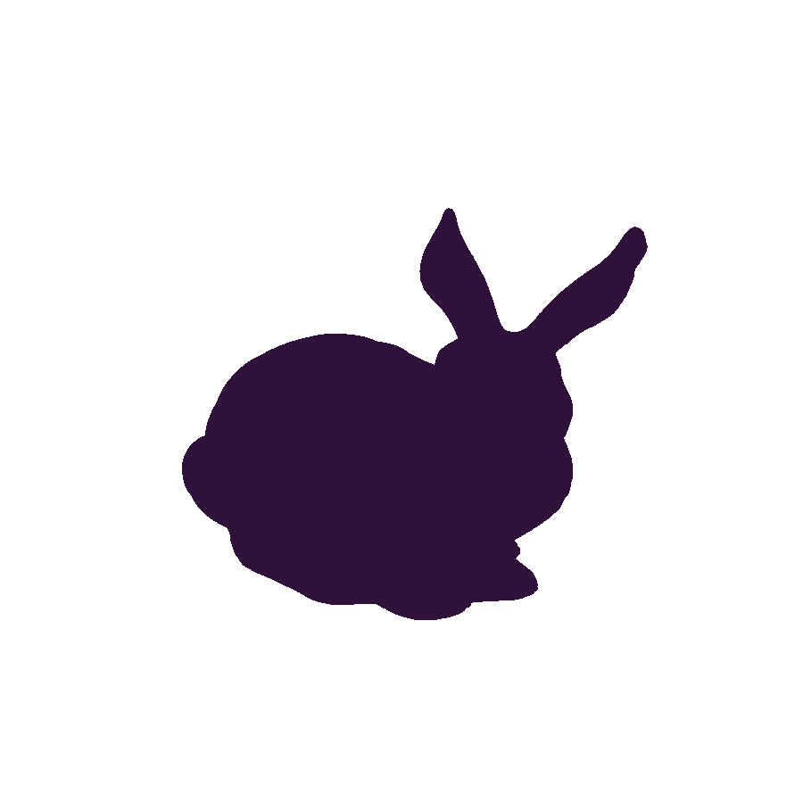

Hyperbolic wave equation
Message-passing predictions evaluated against the reference propagating-wave solution.


I build data-driven digital twins using geometric and physics-aware learning — turning complex mechanics into fast, faithful models for real-time scientific, engineering and biomedical applications.
I am a PhD candidate in Mechanical Engineering at the University of Zaragoza, working with the Applied Mechanics and Bioengineering group at the Aragón Institute of Engineering Research.
My research combines data, physical knowledge and geometric structure to build models that remain accurate while running fast enough for practical use.
The goal is personalised, real-time digital twins for scientific, engineering and biomedical applications.
Institutional profile ↗Learning efficient representations and dynamics directly from simulation data.
Learning PDE dynamics on meshes, graphs and higher-order structures.
Embedding mechanics, thermodynamics and physical structure into learned models.
Fast personalised models for mechanics, physiology and interactive applications.
A progression from controlled PDE benchmarks to geometric mechanics, material variability and biological digital twins. Open any result to inspect it at full scale.
Hyperbolic, elliptic and parabolic benchmarks used to study information propagation and the under-reaching phenomenon in message-passing neural PDE solvers.
Related CFL paper ↗Message-passing predictions evaluated against the reference propagating-wave solution.
A nonlinear mechanics benchmark for learned elliptic solution operators.
Learning the evolving field of a parabolic diffusion problem.
Extending message passing beyond simple graphs to learn mechanics on meshes and higher-order geometric structures.
Stress prediction on a large deformable three-dimensional mesh.
Learning the evolving state of a deforming surface through geometric message passing.
New results on learning PDE dynamics with topological representations.
Learning constitutive response across isotropic and anisotropic materials while preserving spatial and directional structure.
Identifying isotropic material response from the deformation of a cantilever beam.
Learning direction-dependent mechanical response in heterogeneous media.
A shared learned representation across varying constitutive behaviours.
Data-driven models for reaction–diffusion, electrophysiology and patient-shaped anisotropic cardiac mechanics.
Learning the spatiotemporal evolution of a biological reaction–diffusion system.
Learning coupled voltage and refractory dynamics in excitable cardiac tissue.
Patient-shaped filling mechanics with direction-dependent myocardial response.
Research at the intersection of mechanics, machine learning and digital twins.
University of Zaragoza · Applied Mechanics and Bioengineering
University of Zaragoza · AI techniques for digital human twins
University of Zaragoza · Finite element simulation of DIPG progression
9th International Conference on Computational and Mathematical Biomedical Engineering · Kobe
XIII I3A Young Researchers Conference
Grant awarded for the master's degree final project
I’m open to conversations and collaborations around scientific machine learning, computational mechanics, biomedical simulation and digital twins.
Start a conversation ↗